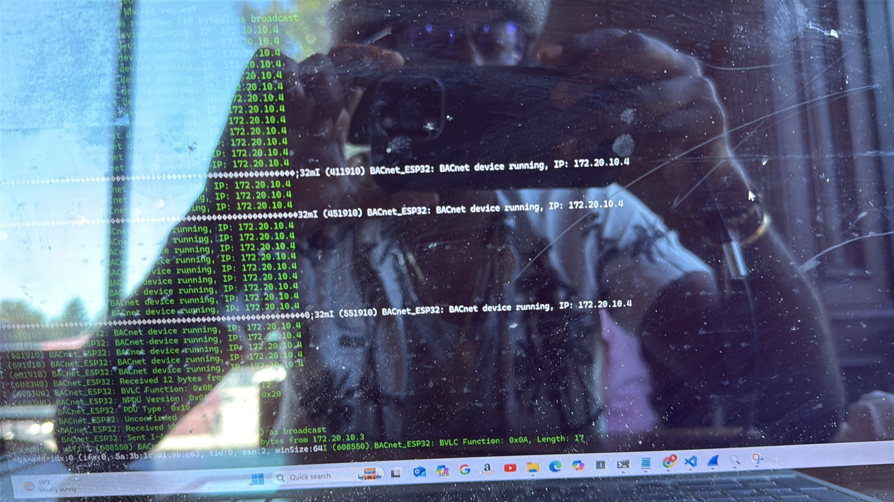
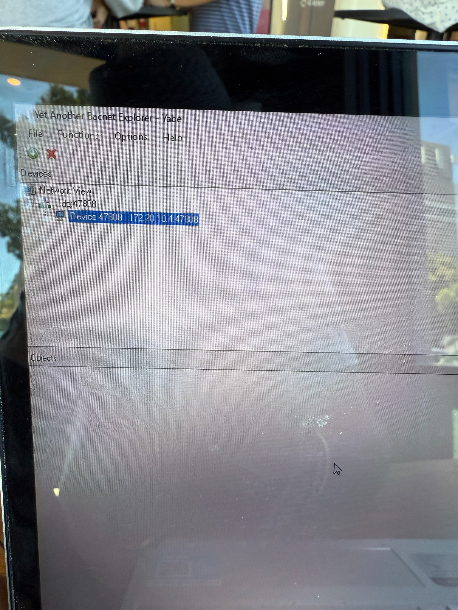
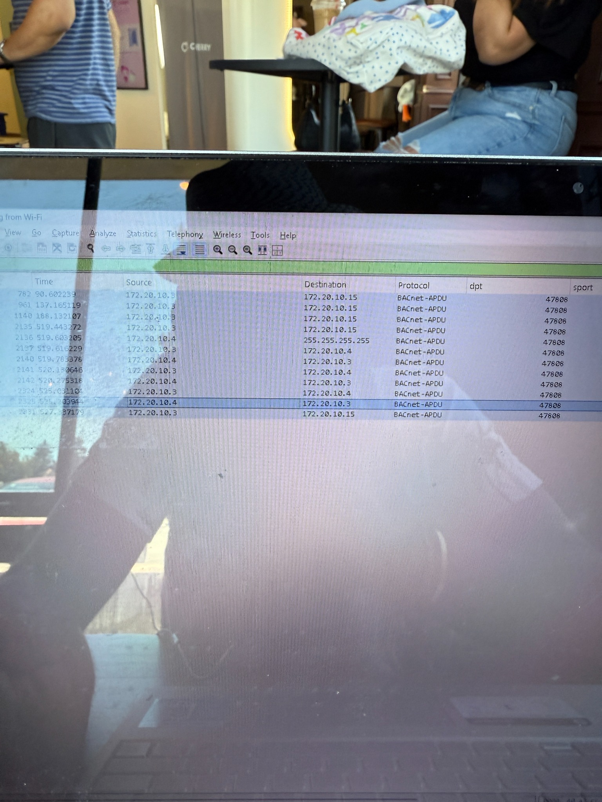
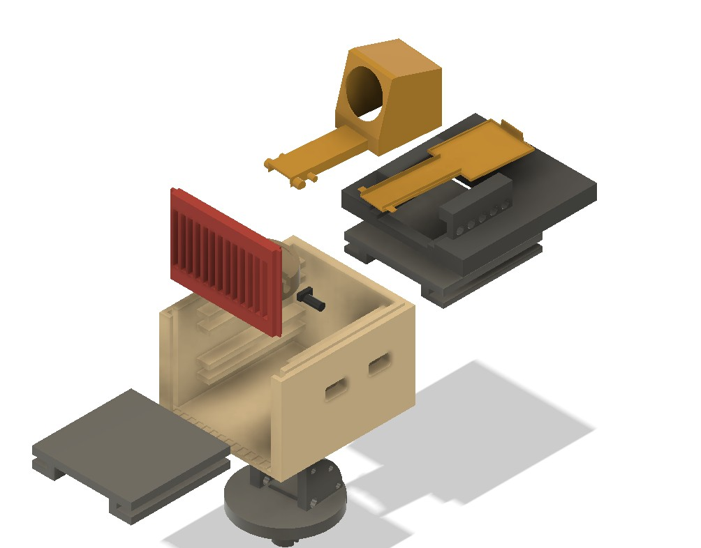
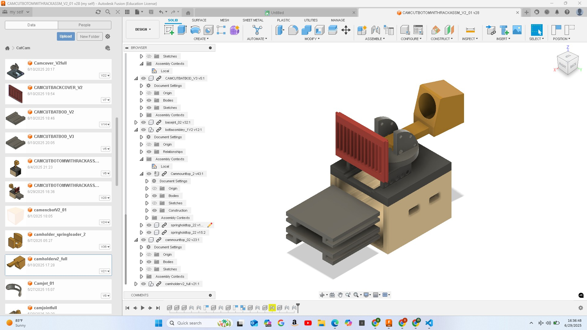
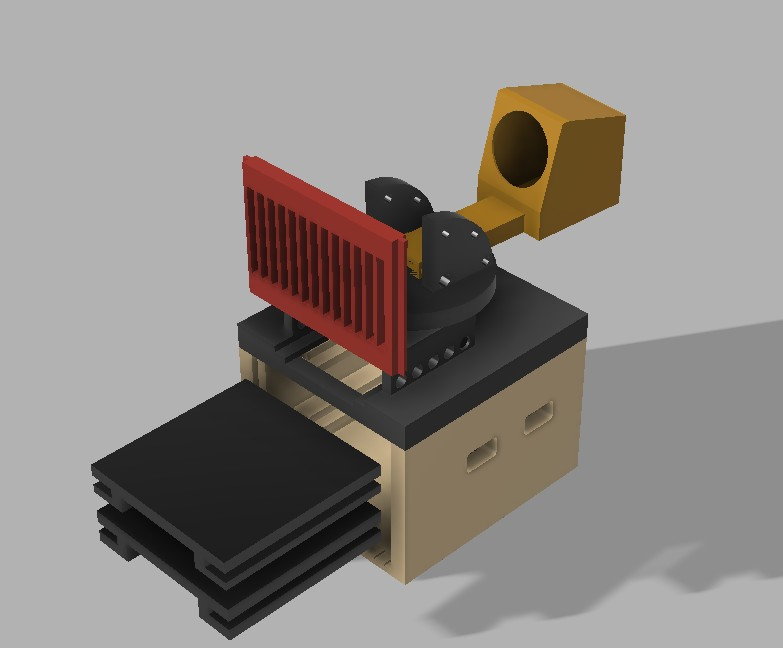

Project 1: BACnet/IP on ESP32
A lightweight BACnet/IP protocol stack implementation using ESP32, supporting Wi-Fi networking, UDP socket handling, Who-Is/I-Am discovery, and basic Read Property service parsing.
- Tools: ESP-IDF, FreeRTOS, Wireshark, UDP
- Features: Debug logging, APDU parsing, unicast/broadcast support





Project 2: CutCam – Wireless Hair Clipper Camera
CutCam solves the challenge of grooming the back of your head by attaching a Wi-Fi-enabled camera to standard hair clippers, streaming live video to smart devices. Designed for DIY grooming convenience.
- Tools: Fusion 360, ESP32, 3D printing
- Features: Universal fit, live video streaming, easy installation



Project 3: BMW Logo CNC Carving
A CNC-machined BMW logo created from wood and filled with epoxy, designed in Fusion 360 and toolpathed for 3-axis milling. This project was for personal crafting use.
- Tools: Fusion 360 CAM, CNC router
- Features: 2D contour, adaptive, and pocket toolpaths